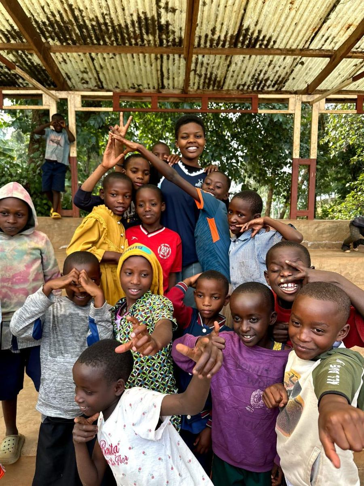
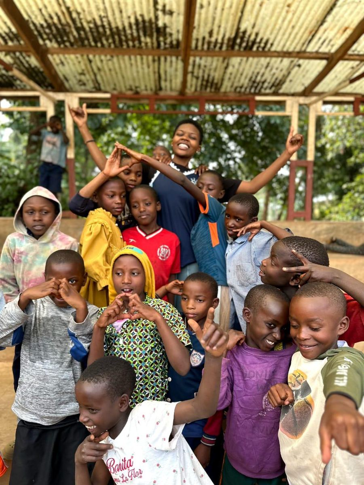
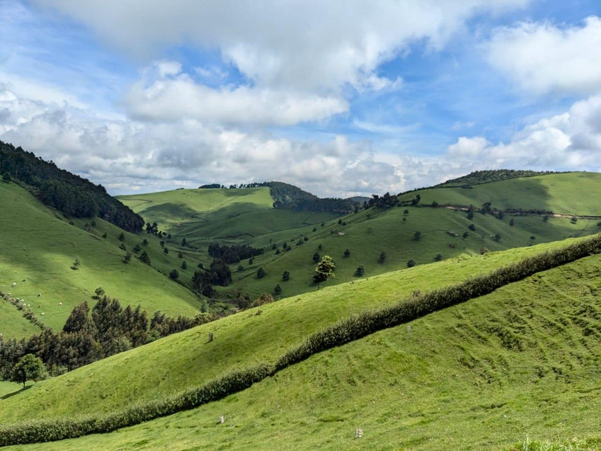
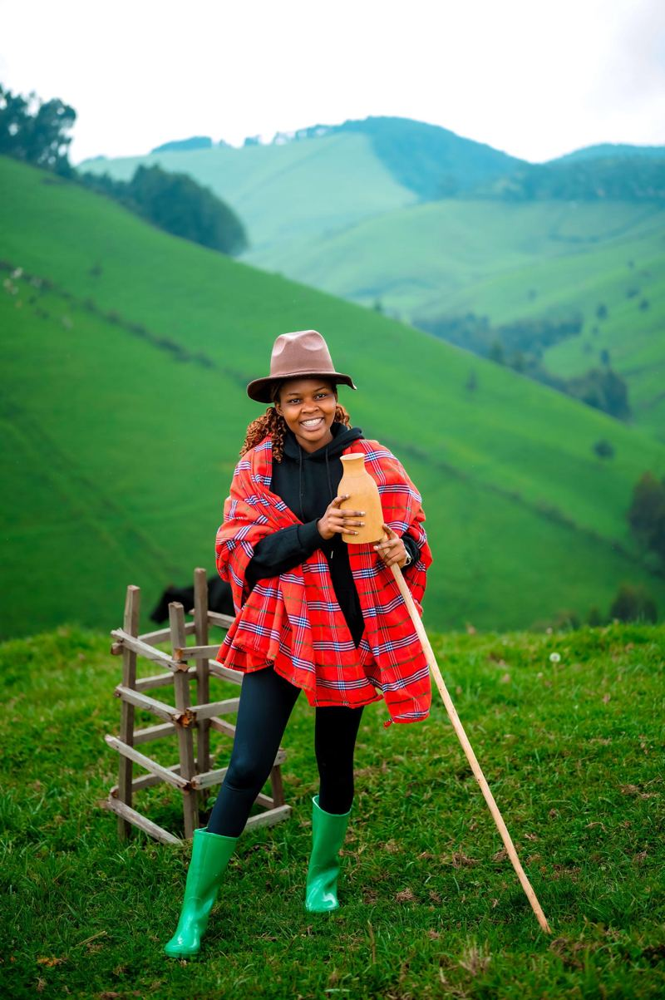
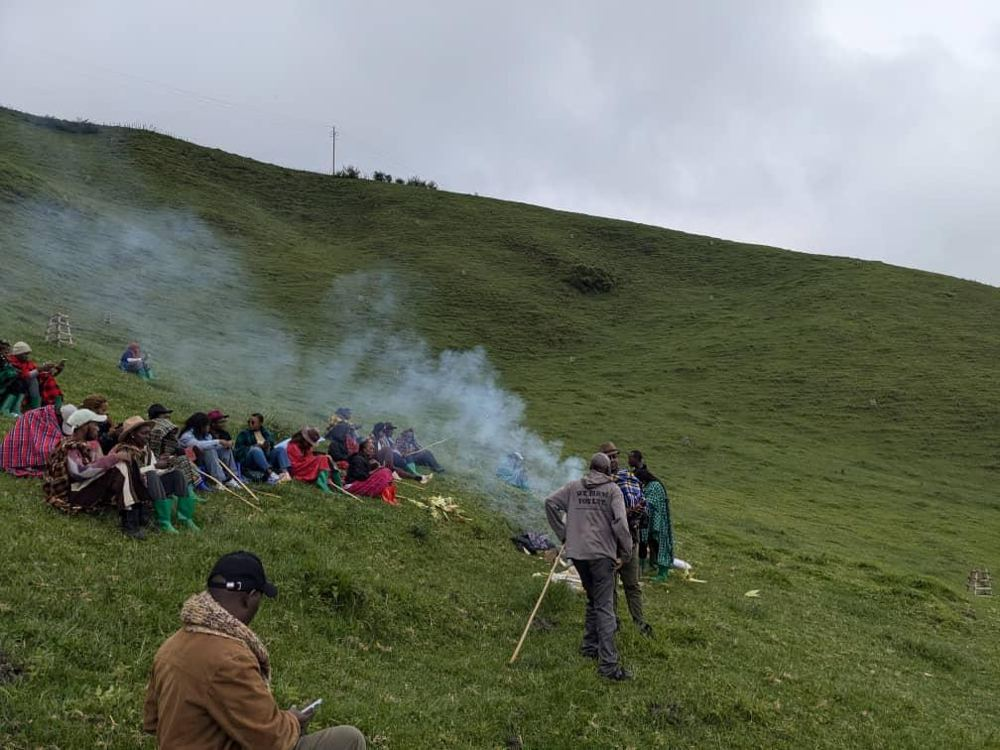
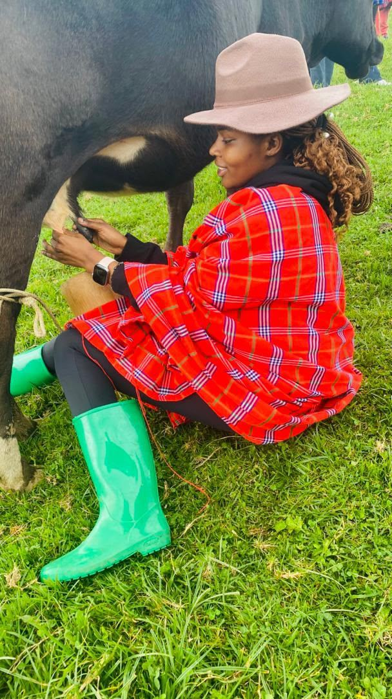

Audio story
Where Learning Begins
Listen
Isunzu Yacu Village, Burera
In northern Rwanda, someone who grew up in Isunzu Yacu Village built a safe place where young children spend the whole day learning. There is a library, and children use computers and tablets, practise public speaking and build their English. Every child under six also gets one egg to stay healthy. The founder once struggled to use a computer and lacked confidence, so he made sure the next generation would not.


Bigogwe
Bigogwe is a green, calm place with many cows. A young person there created a welcoming space where visitors relax in nature and are taught how to milk a cow, among other skills.




Highlights from the visits
Full transcript
Download the transcript (plain text)
My name is Divine Mutesi, and I believe technology can change how children learn, especially in rural areas, where it is often hardest to reach. To understand that better, I decided to go and see rural life for myself.
My first visit was to Isunzu Yacu Village, in Burera District, in northern Rwanda. There, someone who grew up in the village has created a safe place for young children. They gather there and stay the whole day, and they learn while they are there.
There is a library where children read books. They also use computers and tablets, and they learn how to work with them. They practise speaking in public, and they build their English skills.
The centre has another program too. Every child under six receives one egg, to help keep them healthy.
The reason behind all of this is personal. The founder grew up in the same village, and he struggled with skills like using a computer. He had little confidence, because of where he was raised. So he decided that the children of his village would not be left behind in the same way.
My second visit was to Bigogwe. It is a beautiful, calm, green place, full of cows. A young person there has created a welcoming space around them. Visitors come to relax in nature, and they are taught how to milk a cow, along with many other things.
Both places showed me the same thing. Learning does not only happen in classrooms. It happens when someone decides to create a space and share what they know.
For me, that is the mission: to bring technology into education in rural areas, so that no child is left behind because of where they grew up.
This is StoryCast. Thank you for listening.